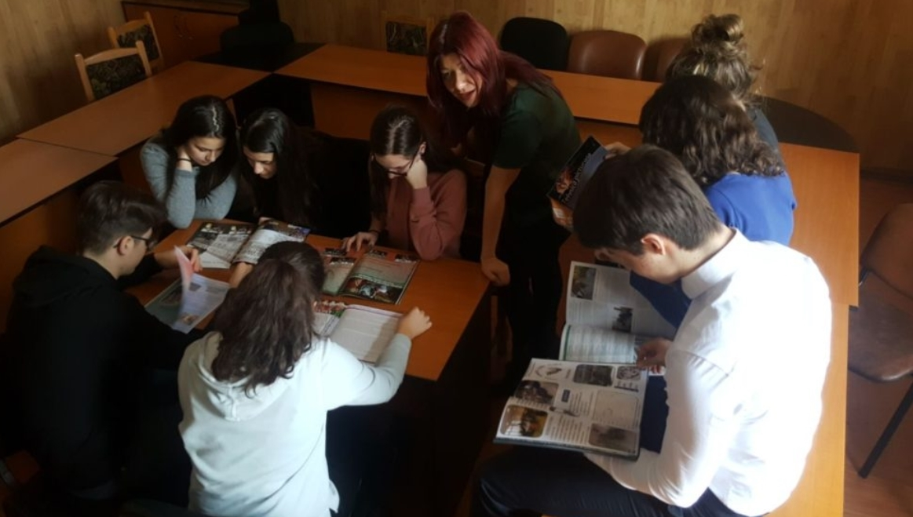

Liceului Teoretic "Aurel Vlaicu" Breaza
● Admiterea în învățământul primar, aprilie 2018
În secțiunea specifică admiterii în clasa pregătitoare au fost publicate informațiile necesare înscrierii pentru anul școlar 2018-2019.
● Concursul interjudețean de reviste "ARIPI", 23 ianuarie 2018

Liceul Teoretic "Aurel Vlaicu" Breaza, în parteneriat cu Inspectoratul Școlar Județean Prahova
și cu Centrul Cultural "Ion Manolescu", Breaza organizează ediția a III-a a Concursului interjudețean
de reviste școlare ARIPI, care se adresează elevilor de gimnaziu și de liceul și coordonatorilor de
publicații școlare.
Participă școlile care au editat reviste literar-artistice care abordează dimensiunile educației, culturii și cercetării.
Sunt acceptate publicațiile cu sau fără ISSN, apărute la nivel de clasă sau de unitate de învățământ, în anii școlari
2017-2018.
Mai multe informații la următoarea adresa:
Click aici.